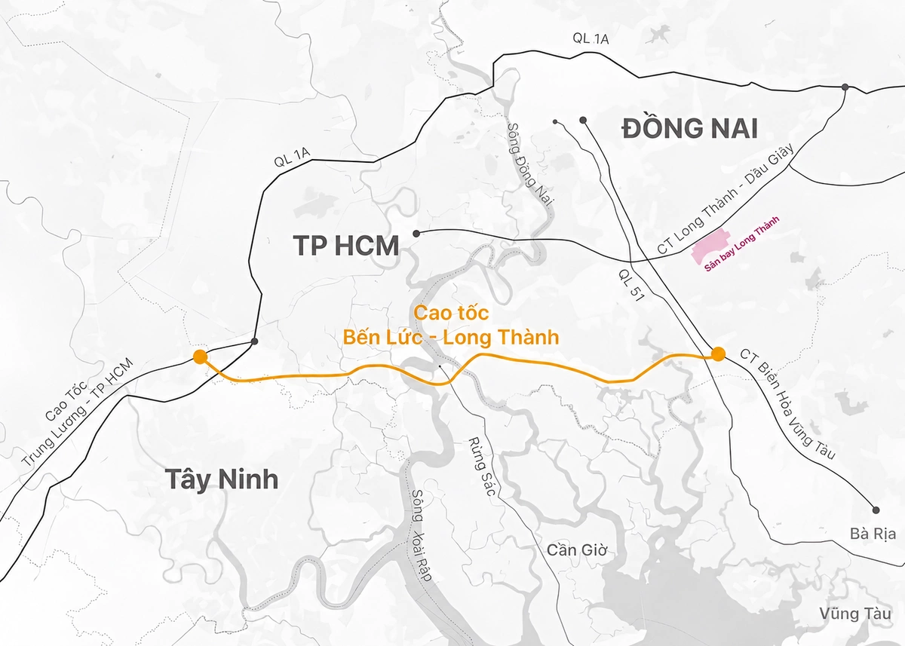
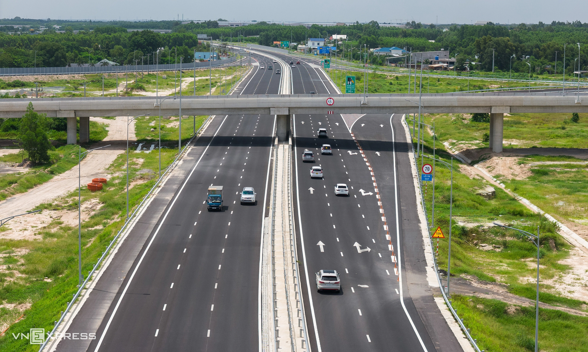
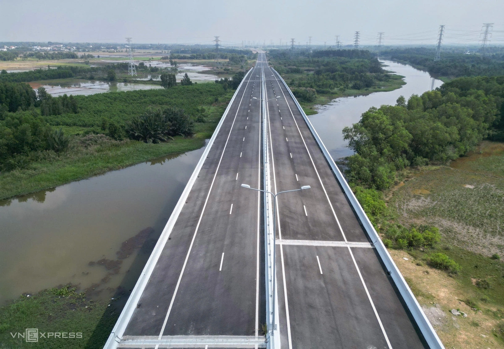
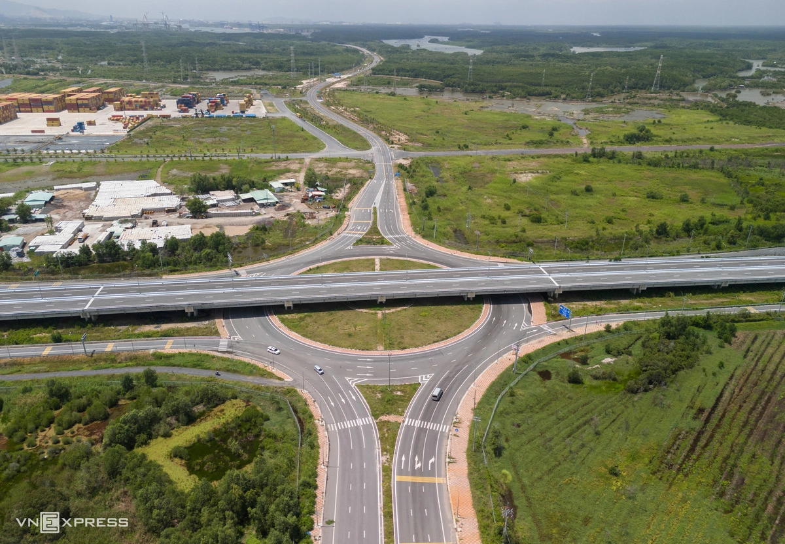

Thông Số Kỷ Lục & Tác Động Hạ Tầng:
- Tổng mức đầu tư 31.300 tỷ đồng: Tuyến cao tốc dài 58km đi qua Long An (Tây Ninh), TP.HCM và Đồng Nai, thiết kế 4 làn xe chạy, 2 làn dừng khẩn cấp, tốc độ tối đa 100 km/h.
- Hai cây cầu dây văng kỷ lục Việt Nam: Cầu Bình Khánh (dài 2,76km, tháp cao 155m, tĩnh không 55m) và Cầu Phước Khánh (dài 3,1km, tháp cao 135m) chính thức hợp long, thông suốt toàn tuyến.
- Đột phá liên kết vùng Đông – Tây Nam Bộ: Xe cộ từ miền Tây và Khu Nam Sài Gòn di chuyển thẳng sang Đồng Nai, TP. Hồ Chí Minh mà không cần xuyên qua nội đô TP.HCM, tiết kiệm hơn 1h30 phút di chuyển.
- Thời gian đến Saigon Farm Resort: Từ Khu Nam TP.HCM chỉ còn 55 – 60 phút; từ miền Tây chỉ còn 1h45 – 2h; từ Sân bay Long Thành chỉ 30 – 35 phút; từ khu điền trang đến Casino Hồ Tràm chỉ 15 phút.

1. Đại Công Trình 31.300 Tỷ Đồng: Mảnh Ghép Vàng Hoàn Tất Mạng Lưới Cao Tốc Phía Nam
Khởi công từ năm 2014, Cao tốc Bến Lức – Long Thành là công trình hạ tầng giao thông trọng điểm quốc gia với tổng chiều dài 57,8 km, tổng mức vốn đầu tư hơn 31.300 tỷ đồng. Sau hơn 12 năm thi công kiên trì và vượt qua nhiều thách thức về chính sách và nguồn vốn, tuyến đường huyết mạch lớn nhất liên kết hai vùng Đông và Tây Nam Bộ đã chính thức về đích, chuẩn bị thông xe toàn tuyến vào tháng 9.
Tuyến đường được thiết kế theo tiêu chuẩn cao tốc loại A hiện đại bậc nhất: quy mô 4 làn xe chạy và 2 làn dừng khẩn cấp, bề rộng nền đường 24m, vận tốc thiết kế tối đa 100 km/h. Hệ thống biển báo chỉ dẫn, rào chắn hộ lan, dải phân cách chống chói, tường chống ồn và hệ thống thu phí không dừng ETC đã hoàn thiện 100% trên toàn tuyến.

Sơ đồ hướng tuyến toàn bộ 58km Cao tốc Bến Lức – Long Thành kết nối từ Bến Lức (Long An) qua TP.HCM tới Long Thành (Đồng Nai).
2. Điểm Nhấn Kiến Trúc & Hệ Thống Nút Giao Trọng Yếu
Tuyến cao tốc Bến Lức – Long Thành sở hữu những công trình kỹ thuật cầu đường phức tạp và ấn tượng bậc nhất Đông Nam Á:
🌉 1. Cầu Bình Khánh (Sông Soài Rạp)
Dài 2,76 km nối huyện Nhà Bè và huyện Cần Giờ (TP.HCM). Nhịp chính dây văng dài 375m, hai tháp cầu cao 155m và độ tĩnh không thông thuyền đạt 55m — thuộc nhóm cầu có tĩnh không cao nhất Việt Nam, cho phép tàu container biển trọng tải lớn lưu thông an toàn.
🌉 2. Cầu Phước Khánh (Sông Lòng Tàu)
Dài 3,1 km nối huyện Cần Giờ (TP.HCM) với huyện Nhơn Trạch (Đồng Nai). Nhịp chính dài 300m, hai trụ tháp cao 135m. Cây cầu vừa hợp long thành công, đóng vai trò then chốt kết nối trọn vẹn hai bờ sông Lòng Tàu.

Đoạn cao tốc tuyệt đẹp băng qua vùng rừng ngập mặn trù phú và cầu vượt nút giao Vĩnh Thanh (Phước An, Đồng Nai).
5 Nút Giao Chiến Lược Giải Phóng Áp Lực Giao Thông:
- Nút giao Mỹ Yên (Long An): Điểm đầu kết nối cao tốc TP.HCM – Trung Lương và Vành đai 3 TP.HCM (tổng đầu tư 75.300 tỷ).
- Nút giao Quốc lộ 50 (Đa Phước, TP.HCM): Đón dòng phương tiện từ khu vực Bình Chánh, Quận 8, Quận 7 kết nối nhanh vào cao tốc.
- Nút giao Nguyễn Văn Tạo (Nhà Bè, TP.HCM): Cửa ngõ kết nối KCN Hiệp Phước và cụm cảng biển phía Nam Sài Gòn.
- Nút giao Phước An (Nhơn Trạch, Đồng Nai): Kết nối trực tiếp vào Cảng biển Phước An và đường Trường Chinh.
- Nút giao Quốc lộ 51 (Long Thành, Đồng Nai): Điểm cuối giao cắt Quốc lộ 51 và Cao tốc Biên Hòa – Vũng Tàu, dẫn thẳng về Đất Đỏ – Hồ Tràm.

Nút giao Mỹ Yên — Nơi hội tụ của Cao tốc Bến Lức – Long Thành, Cao tốc TP.HCM – Trung Lương và Đại lộ Vành đai 3.
3. Cẩm Nang 4 Tuyến Đường Vàng Dẫn Khách Hàng Đến Saigon Farm Resort
Sự hoàn thành của tuyến cao tốc Bến Lức – Long Thành mở ra mạng lưới giao thông liên hoàn, giúp du khách từ mọi vùng miền di chuyển đến Saigon Farm Resort vô cùng thuận tiện, êm ái và nhanh chóng:
🚗 TUYẾN 1: Từ Các Tỉnh Miền Tây (Cần Thơ, Tiền Giang, Long An...)
Lộ trình: Cao tốc TP.HCM – Trung Lương ➔ Nút giao Mỹ Yên ➔ Cao tốc Bến Lức – Long Thành (chạy thẳng 58km) ➔ Nút giao QL51 ➔ Cao tốc Biên Hòa – Vũng Tàu ➔ Nút giao Đất Đỏ / DT765 ➔ Saigon Farm Resort.
⏱️ Thời gian di chuyển: Chỉ còn 1h45 – 2h (Tiết kiệm hơn 1h30 phút, không cần xuyên qua trung tâm TP.HCM hay chịu cảnh kẹt xe tại cửa ngõ phía Tây).
🚗 TUYẾN 2: Từ Khu Nam TP.HCM (Phú Mỹ Hưng, Quận 7, Nhà Bè, Bình Chánh)
Lộ trình: Đại lộ Nguyễn Văn Linh ➔ Nút giao Nguyễn Văn Tạo / QL50 ➔ Cao tốc Bến Lức – Long Thành ➔ Cầu Phước Khánh ➔ Nhơn Trạch ➔ QL51 ➔ Tuyến Đất Đỏ ➔ Saigon Farm Resort.
⏱️ Thời gian di chuyển: Chỉ 55 – 60 phút lái xe êm ái trên cao tốc hiện đại.
🚗 TUYẾN 3: Từ Trung Tâm TP.HCM & Khu Đông (Quận 1, Bình Thạnh, TP. Thủ Đức)
Lộ trình: Mai Chí Thọ ➔ Cao tốc TP.HCM – Long Thành – Dầu Giây ➔ Nút giao Cao tốc Biên Hòa – Vũng Tàu ➔ Nút giao Đất Đỏ (cách khu điền trang đúng 5 phút) ➔ Saigon Farm Resort.
⏱️ Thời gian di chuyển: Đúng 60 phút di chuyển thảnh thơi cho kỳ nghỉ dưỡng cuối tuần.
✈️ TUYẾN 4: Từ Sân Bay Quốc Tế Long Thành (Khách Quốc Tế & Kiều Bào)
Lộ trình: Ga hành khách Sân bay Long Thành ➔ Tuyến giao thông kết nối T1/T2 ➔ Cao tốc Biên Hòa – Vũng Tàu / Tuyến DT765 ➔ Saigon Farm Resort.
⏱️ Thời gian di chuyển: Chỉ 30 – 35 phút — Cửa ngõ hoàn hảo đón trọn 100 triệu lượt khách quốc tế mỗi năm!

Mặt đường cao tốc trải nhựa êm ái, hệ thống chiếu sáng và tường chống ồn tiêu chuẩn quốc tế giúp trải nghiệm lái xe cực kỳ an toàn.
4. Tọa Độ Vàng Kết Nối: 15 Phút Đến Casino Hồ Tràm & Thiên Đường Biển
Không chỉ sở hữu hạ tầng kết nối vượt trội về TP.HCM và sân bay, từ Saigon Farm Resort, gia chủ và du khách chỉ mất đúng 15 phút lái xe ôtô để tiếp cận toàn bộ hệ sinh thái giải trí thượng lưu ven biển Hồ Tràm:
- The Grand Ho Tram Strip Casino: Tổ hợp sòng bài quốc tế 5 sao và khách sạn InterContinental sôi động.
- Sân Golf The Bluffs Ho Tram: Top 100 sân golf tốt nhất thế giới do Greg Norman thiết kế.
- Bãi biển Hồ Tràm – Hồ Cốc: Một trong những bãi biển hoang sơ đẹp nhất hành tinh theo kênh truyền hình CNN bình chọn.

Sơ đồ liên kết vùng: Saigon Farm Resort tọa lạc tại tâm điểm hội tụ của các trục cao tốc huyết mạch và chuỗi tiện ích tỷ đô Hồ Tràm.
5. Bảng So Sánh Thời Gian Di Chuyển Trước & Sau Khi Cao Tốc Thông Toàn Tuyến
6. Thời Điểm Vàng Để Sở Hữu Điền Trang Nghỉ Dưỡng Sinh Thái
Trong lịch sử phát triển bất động sản, thời điểm một đại công trình cao tốc chính thức thông xe luôn là cột mốc kích hoạt sự bùng nổ mạnh mẽ nhất về giá trị bất động sản.
Với việc Cao tốc Bến Lức – Long Thành thông toàn tuyến vào tháng 9 kết hợp cùng Cao tốc Biên Hòa – Vũng Tàu và Sân bay Quốc tế Long Thành chuẩn bị vận hành thương mại, Saigon Farm Resort đang đón nhận vận hội phát triển rực rỡ nhất. Sở hữu một căn biệt thự điền trang tại đây thời điểm này chính là nắm bắt cơ hội sinh lời kép: vừa là chốn an cư nghỉ dưỡng sinh thái chuẩn mực, vừa là khối tài sản tích sản gia tăng phi mã theo từng nhịp đập hạ tầng quốc gia.
Đăng Ký Tham Quan Thực Tế Tuyến Cao Tốc & Saigon Farm Resort
Xe Limousine cao cấp đưa đón trải nghiệm thực tế lộ trình cao tốc Bến Lức – Long Thành và tham quan quần thể biệt thự điền trang ven hồ sinh thái 100ha.
Xem Bản Đề Xuất & Lịch Đưa Đón Trải Nghiệm